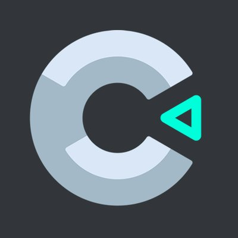

Na matéria Experiência Criativa, foram desenvolvidos algum projetos de diferentes temas, sendo eles um
jogo, um aplicativo e dois sites.
Pig Runaway Simulator
O primeiro projeto da matéria consistiu em produzir um jogo na engine Construct 3.

Esse projeto foi repleto de desafios, pois foi o nosso primeiro trabalho na faculdade. Ainda não
estávamos no ritmo de estudos exigido e não nos conhecíamos. Meu grupo desenvolveu um jogo chamado
Pig Runaway Simulator, um jogo de plataforma 2D em que o personagem principal é um porco chamado
Porcorredor, cujo
objetivo é fugir da fazenda sem ser pego pelo fazendeiro malvado.
Carroots
Esse projeto foi interessante, pois foi o nosso primeiro projeto com cárater extencionista. Tínhamos
como objetivo criar um aplicativo utilizando a linguagem Java que ajudasse crianças a aprenderem.
Como em nossa área aprendemos desde o começo de nossa formação que o Inglês é fundamental, decidimos
criar um aplicativo para ajudar crianças com o primeiro contato com o idioma, ensinando as principais
cores e alguns alimentos.
Crazy Cat Gang
A Crazy Cat Gang é uma ong de Curitiba que resgata gatos abandonados. Aqui nosso objetivo foi criar uma
solução para alguns dos problemas enfrentados por eles através de um site.
Após analisar o site deles, percebemos que muitas funcionalidades importantes eram feitas por serviços
de terceiros, como o google forms, por exemplo, então decidimos resolver isso, criando uma forma de
captar novos voluntários diretamente pelo próprio site.
como a captação de orçamento é crucial para o funcionamento da ong, achamos importante juntar em um
lugar só todas as maneiras de ajudar financeiramente a ong. Visando criar uma ponte para a comunidade
ajudar a ong, criamos uma maneira do usuário reportar um gato abandonado, facilitando assim o trabalho
da ong.
Um dos maiores desafios desse projeto foi recriar o design do site, tendo em vista que o site da ong não
havia muitas conexões com a identidade visual da mesma, e não cumpria totalmente com o seu propósito.
Blog Pessoal
Esse é o último projeto da matéria Experiência Criativa, o objetivo aqui é criar um site para
documentar tudo que foi visto e trabalhado durante o primeiro semestre do curso de Ciência da Computação
da PUCPR.